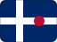

Vanuatu
Short facts
RegionOceania / Melanesia
LanguageBislama, English
Time zoneVUT (UTC+11)
Drives onRight
Worth seeing
- Mount Yasur: One of the world's most accessible active volcanoes, on Tanna Island.
- Blue Hole: Crystal-clear blue holes and swimming spots across Espiritu Santo.
- SS President Coolidge: One of the world's greatest wreck dives, a luxury liner turned troop ship sunk in 1942.
Planning questions
What is Vanuatu known for?Mount Yasur, Blue Hole, SS President Coolidge.
What is the capital?Port Vila.
Which language is useful?Bislama, English.
When is the national day?30 July.
How should I browse it here?Start with the facts, jump to linked cities, then check events and topics.
Upcoming events
No future Vanuatu-linked events are active in the current dataset.
Food & drink
 Street food
Street food Tea
TeaKnown for
Mount YasurBlue HoleSS President CoolidgePort VilaStreet foodTea
 Music & Culture
Music & Culture Pacific islands
Pacific islands